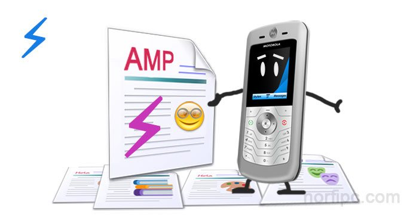
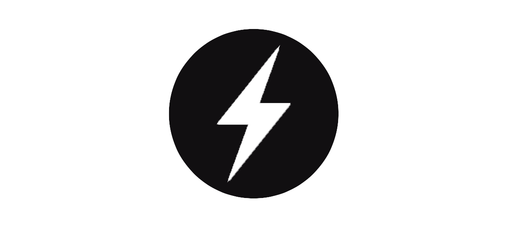

AMP: Páginas aceleradas para móviles
Se trata de un proyecto nacido y alojado en Internet dedicado a mejorar, optimizar y acelerar la carga
y funcionamiento de las páginas que sean visualizadas en dispositivos móviles. Dicho proyecto es de código abierto, por lo que cualquier
persona que desee hacer uso de él, puede usar las librerías disponibles sin necesidad de contar con licencias o permisos de uso. Este proyecto
cuenta con el apoyo de grandes empresas de Internet, tales como Facebook, Google, Twitter. Actualmente su uso está mayormente enfocado en
sitios web de noticias.

Figura 1: AMP: Páginas aceleradas para móviles
Preguntas
¿Para qué tipo de publicaciones están principalmente dirigidas las AMP?
Se usa principalmente en sitios de noticias, aunque puede usarse en cualquier tipo de sitio web.
¿Cuál es el icono con la que diferencia Google a las AMP?
El icono utilizado es un circulo con un rayo en su interior 
Indica cuáles son las ventajas y desventajas que tu identificas de las AMP con las tradicionales
Ventajas:
- Las páginas se cargan de manera más rapida y consumen menos datos
- Permite al buscador calcular y mostrar la página web móvil con una sola petición HTTP.
- De manera nativa las páginas AMP soportan diversas redes de publicidad.
- Permite a los aununciantes conocer el flujo de usuarios que visitan la página (Estadísticas).
Desventajas:
- No se puede hacer uso de scripts, algo muy común en los sitios web normales.
- No se pueden cargar hojas de estilo externas, por lo que el estilo a aplicar debe estar revuelto con el contenido de la página.
- No se puede hacer uso de los "botones sociales", por lo que se limita la interacción con redes sociales.
- El código de la página se hace pesado de interpretar y el mantenimiento se dificulta para personas no expertas.
Bibliografía